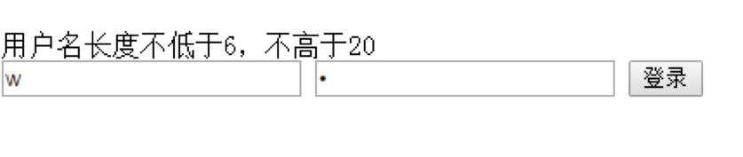

练习：
给定一个字符串(包含数字,大写字母和小写字母)例如：“abaasdFFggs3545jjkkGfDDsssss3444343”；问题如下：
- 字符串的长度;
- 取出指定下标位置的字符：0,3,5,9;
- 查找指定字符是否在以上字符串中存在：c;
- 替换指定的字符: 将g替换为22,ss替换为b;
- 截取指定开始下标位置到结束位置的字符串: 取得3--8(包含8)的字符串;
- 遍历字符串，并将遍历出的字母两头添加符号“@”输出至当前的文档页面, 数字按原样显示,每行5个;
必做：
1.注册页面的简单数据校验
- 用户名不可以用数字开头
- 用户名长度不低于6，不高于20
- 密码不能为空
- 输入框中要有默认提示
- 所有输入框不能有空格，并数据合法，点击提交才可以正确提交表单数据

2.字母数字组合验证码（四位） (如: 4YT8)
- onblur =”btnClick()” : 失去焦点事件
- placeholder : 提示文本（占位文本）
作业2
- 找出出现最多的字母，找出字符串中出现次数最多的字母，将该字母串中出现次数最多的字母，将该字母和字母出现的次数拼接成一个新字符串，返回新字符串
传入:” WelcomeToQianfeng”;返回:”e3”;（要求编写成函数）
- 将字符中单词用空格隔开,已知传入的字符串中只有字母,每个单词的首字母大写，请将每个单词用空格隔开，只保留一个单词的首字母大写
传入:”HelloMyWorld” 返回:”Hello my world”
- 已知一个字符串对象中，英语单词用各种非字母字符分割，统计单词的个数
传入: “Yes,she**is%%my@love.”
作业3
- 将字符串按照单词进行逆序，空格作为划分单词的唯一条件传入:”Welome to Beijing”改为 “Beijing to Welcome”
- 对称数组传入一个数组，起元素类型与个数皆未知，返回新数组，由原数组的元素正序反序拼接而成传入[“One”, “Two”,”Three”] 返回[“One”, “Two”, “Three”,”Three”,”Two”, “One”]
- 实现函数，查找子串出现的次数，返回字符串str中出现substring的次数传入:”abcabcabc”, “abc”; 返回:3
- 已知千锋邮箱的用户名只能由数字字母下划线组成，域名为@1000phone.com,判断一个字符串是否是千锋邮箱，是返回true，不是返回false。
mail@1000phone.com 是
$mail@1000phone.com 不是
mail@1000phone.comp 不是